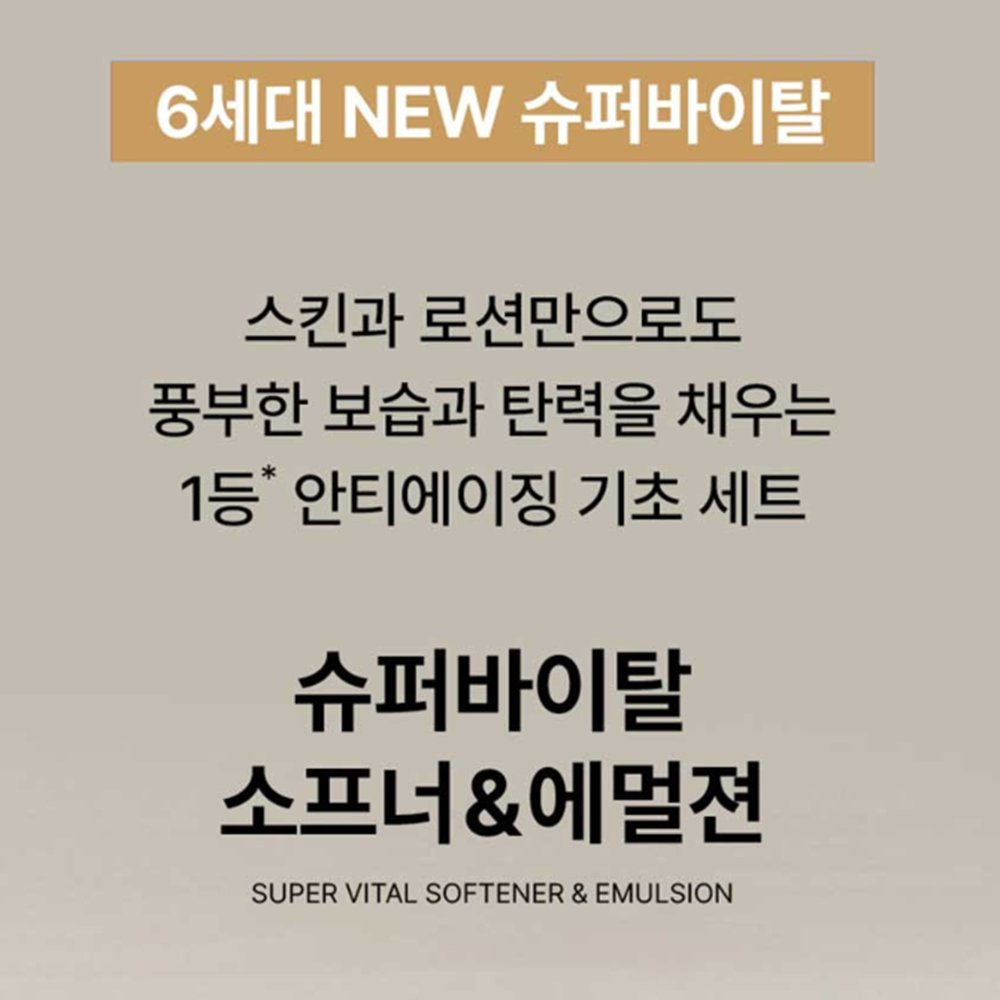
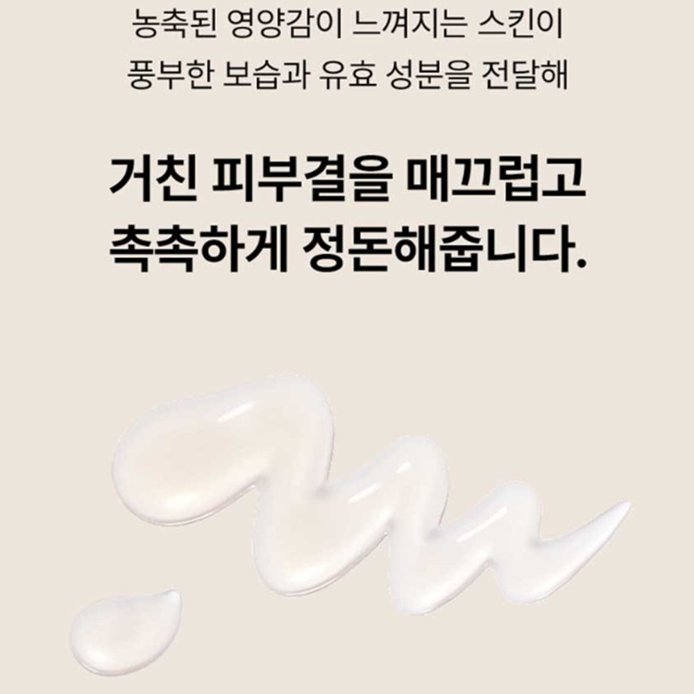

IOPE Super Vital Softener and Emulsion Review at a Glance
This IOPE Super Vital Softener and Emulsion review looks at one of Korea's classic anti-aging gift sets. IOPE (아이오페) is Amorepacific's research-led skincare brand, and Super Vital is its premium anti-aging line. The NEW 6th-generation formula is built around SENOMUNE™, made from green tea (Camellia sinensis) root extract, plus niacinamide and adenosine.
The set is just two bottles: a 150ml softener (toner) and a 150ml emulsion. So is it a smart "two steps and done" routine, or mostly pretty gold packaging? Here's what's inside, how it feels and who it suits.

What's Inside: SENOMUNE and Friends
IOPE sums up the 6th generation as three technologies working together:
| Ingredient | What It Is | Why It's There |
|---|---|---|
| SENOMUNE™ | Amorepacific ingredient from green tea root extract | IOPE's hero ingredient, aimed at visible aging (brand in-vitro tests) |
| Bio-Seletinoid™ | Kojyl methylenedioxycinnamate, IOPE's retinol-alternative tech | Smoother-looking skin |
| Anti-Oxidant Peptide | Acetyl tetrapeptide-11 with tocopherol and cocoa extract | Firmness and antioxidant care |
| Niacinamide | Vitamin B3 | Brightening (registered in Korea) |
| Adenosine | Skin-conditioning ingredient | Wrinkle care (registered in Korea) |
| Shea butter (emulsion) | Plant butter | Softer, cushioned finish |


Texture, Scent and Daily Feel
The softener is a slightly thick, watery toner. Pressed in with your palms, it absorbs fast and leaves skin feeling plumper rather than tight. The emulsion is a milky lotion that spreads easily and settles into a soft, non-sticky glow, so it works in the morning under sunscreen too.
Both have the light, elegant scent typical of Amorepacific's premium lines, and both list alcohol denat. high enough that you may notice a brief fresh feel. Very dry skin will probably want a cream on top at night.
Key Details
| Item | Details |
|---|---|
| Brand | IOPE (아이오페) · Amorepacific, Korea |
| Product | NEW Super Vital Softener + Emulsion (6th generation) |
| Sizes | 150ml + 150ml (some gift sets add minis) |
| Korean status | MFDS dual-function cosmetic: wrinkle + brightening |
| Contains | Alcohol denat., fragrance |
| Shelf life | 35 months from manufacture |
| Korean price | About ₩139,000 for the set before discounts (November 2026) |
| US Amazon | Availability varies, so we link an Amazon search for the set |


Photo note: These are the 5 real product photos from the Korean listing (some include Korean text). We didn't add any AI-generated images.
How It Compares
| Super Vital Softener + Emulsion | Super Vital Cream | Basic Hydrating Toner | |
|---|---|---|---|
| Routine step | Steps 1–2 | Final, richest step | Step 1 only |
| Actives | SENOMUNE, niacinamide, adenosine | SENOMUNE-based cream | Usually humectants only |
| Texture | Watery toner + milky lotion | Rich cream | Watery |
| Best for | Simple anti-aging basics, gifts | Dry, mature skin at night | Budget or minimal routines |
Pros & Cons
✅ Pros
- From Amorepacific, Korea's biggest beauty group, with clear ingredient stories.
- Wrinkle and brightening functional status for both steps in Korea.
- Light, non-sticky emulsion that works morning and night.
- Elegant, gift-ready packaging.
⚠️ Cons
- Pricey compared with drugstore toners.
- Contains alcohol denat. and fragrance.
- Results are gradual; SENOMUNE data are brand in-vitro tests.
- US availability and price vary.
Who It Suits (and Who Should Skip It)
- Great for: Normal-to-dry skin in your 30s and up that wants an easy two-step anti-aging base.
- Great for: Anyone shopping for a polished Korean skincare gift for a parent or partner.
- Great for: People who want niacinamide and adenosine without retinol irritation.
- Maybe skip: If you're sensitive to fragrance or alcohol, or prefer a minimal, fragrance-free routine.
IOPE Super Vital Set FAQ
What is the IOPE Super Vital Softener and Emulsion?
It's a two-step anti-aging set from IOPE, Amorepacific's science-focused skincare brand: a 150ml hydrating softener (toner) and a 150ml milky emulsion. The NEW 6th-generation formula centers on SENOMUNE, an ingredient made from green tea root extract.
Does it really work on wrinkles?
In Korea both products are registered as functional cosmetics for wrinkle improvement (adenosine) and brightening (niacinamide). That means the claims are allowed, but changes are gradual and subtle. It isn't a substitute for retinoids or sunscreen.
Is it good for sensitive skin?
It's comfortable for most normal-to-dry skin, but both products contain alcohol denat. and fragrance. If you react to either, patch test on your jaw for a few days or pick a fragrance-free toner instead.
Do I need the Super Vital Cream too?
No. The softener and emulsion work as a complete basic routine. Dry or mature skin may like adding the Super Vital Cream at night as a richer last step.
How long does a set last?
With daily morning and night use, a 150ml bottle usually lasts around two to three months. Unopened, the shelf life is 35 months from manufacture.
IOPE Super Vital Softener & Emulsion
Amorepacific's 6th-gen anti-aging toner and emulsion. Check current Amazon listings and sellers.